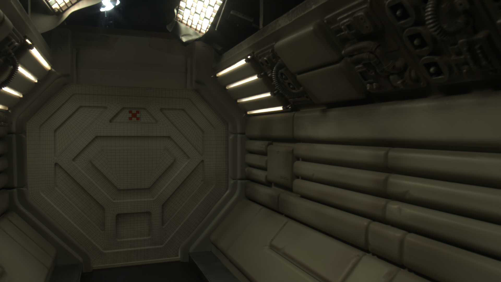

---

layout: default

---
<section class="alien_breakdown">
	<h2 class="portfolio_headings">Alien MOCO Breakdown</h2>

	<p>Working as the lead compositor on this shot, I was responsible for integrating/grading the CG elements into the scene, the lighting animations and placement of 2D elements.</p>

	<div class="alien_image">
		
		<figcaption>Final image composit of shot.</figcaption>
	</div>

	<h3 class="portfolio_headings">Background</h3>

	<p>The project involved shooting a minature model of the chamber and corridor section of the Nostromo ship from the film Alien (1979), using a motion controlled camera rig, with 2D/3D elements to be placed in the scene in post.</p>

	 <div class="alien_image">
	 	
	 	<figcaption>The miniature was made by the modelmaking department, with the VFX team later taking photogrammetry and HDRI data from the set.</figcaption>
	 </div>

	 <div class="alien_image">
	 	
	 	<figcaption>The entire shoot was done using a motion controlled rig, which allowed multiple passes of the same sequence to be shot with the same movement each time.</figcaption>
	 </div>

	 <div class="alien_image">
	 	
	 	<figcaption>The second part of the miniature was the hypersleep chamber, where CG actors, glass and coat would be placed.</figcaption>
	 </div>

	 <div class="alien_image">
	 	
	 	<figcaption>When the shoot took place, different lighting conditions were in place to help replicate the overall increase in ambience of the environment in post.</figcaption>
	 </div>

	 <p>During the shoot, members of the VFX team each handled roles of taking on-set data from the set, such as HDRIs, lens information, lighting postions, set measurements and so on; all useful information necessary to ensure the CG elements were properly part of the scene.</p>


	 <h3 class="portfolio_headings">Compositing the Elements</h3>

	<!--Insert image of edge rebuild here-->

	<p>The process first begins with taking each of the passes necessary for the composit, specifically the lowest ambient pass (our main background plate), the model-making pass (these contained the practical tube lights from the model, showing the light colour and intensity) and the tracking pass (vital for making the 3D camera via matchmove).</p>

	<div class="alien_image">
	 	
	 	<figcaption>A variety of different tracking markers are placed in the scene to resolve the mathcmove camera.</figcaption>
	 </div>

	<p>The flickering lights was done by using a luma-key and keyframing the animation of when the lights should turn on and off, using different wave expressions (purely sinusoidal or often randomly generated waves).</p>

	<p>For each of the CG elements in the scene, a low ambient and model-making varaiation of the same 3D model were used to allow appropriate blending of the lighting conditions in response to the flickering lights.</p>

	<div class="alien_image">
	 	
	 </div>	

	<div class="alien_image">
	 	
	 </div>

	<div class="alien_image">
	 	
	 	<figcaption>The final corridor sequence contains a CG ceiling, coat and door, each have beend graded to match the plate.</figcaption>
	 </div>


	 <p>For the hyersleep chamber section, it involved placing CG actors, glass, pod rims, coat and 2D screen elements into the scene, alongside keyframing the ambient lighting to reveal the environment</p>

	 <p>In order to place each element into the scene, it was necessary to rotoscope various elements to ensure there was no incorrect overlap between the CG and the plate. For example, the door needed to be rotoscoped to fit in the doorway nicely. As the camera data was already at hand, it was possible to project the alpha of the doorway made using a roto shape, onto a card which could then be placed into the scene to ensure the alpha followed the movement of the camera.</p>

	 <p>Additionally, the CG elements needed to be rotoscoped in parts to allow the actor to be placed within the curvature shape of the glass; the pod rims were similarly processed to allow them to be in front of the glass whilst also, "behind" when considering the back rear of the pod.</p>

	 <p>The screen inserts were done by using corner pin tracking; the timing of when the screens turn on was done taking into consideration when the door was fully lifted up. Some glow effects were also applied to provide a slight amount of light spill on the chamber walls.</p>
	<!--Insert images of subtraction images, alpha (possibly?) and final prepared plate-->

	<div class="alien_image">
	 	
	 </div>

	<div class="alien_image">
	 	
	 	<figcaption>The final composit of the chamber shot with a number of elements separate from the live-action shot.</figcaption>
	 </div>

</section>
